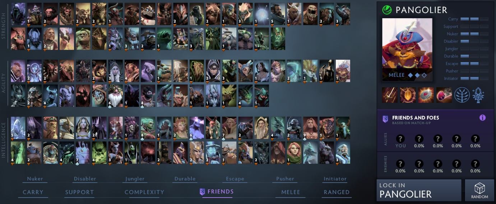
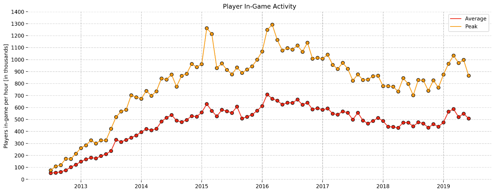

Dota, is one of the most widely played online games in the world, with half a million users logged in every hour. Dota is more than just your average video game because It combines the complexities of chess with the mechanics of a video game. You need to be fast and, on your toes, to compete in this popular MOBA. Dota 2 is played in a team of 5 people, where each player chooses a character out of 117 different characters, each equipped with unique abilities. Once you have chosen the right combination of characters, you battle until one team destroys the other team’s ‘Ancient’. Heroes can equip themselves with up to 11 spells, each creating a different impact on the battlefield. Players then get to choose among 152 items. Each item is purchased using gold collected and either enhances the abilities of the characters or protects them during the battle. This wide range of options defines the beauty of Dota as a game. Each match is unique, action packed and an epic battle of wits.
Dota has 3 lanes where players battle. Lanes contain barracks that unleash CPU controlled creeps that move towards enemy base. Killing creeps lets player acquire gold that they can use to purchase items and improve their game. When your hero dies and simply respawns back in your base after serving a small penalty time. Willfully returning to the base can help heal players and restore mana. Each player attempts to move closer to the enemy’s Ancient which cannot be damaged until one lane of towers is cleared.

Source: https://dota2.gamepedia.com/Lane, Dota 2 map with main lanes where players of two separate team — Radiant and Dire clash together with creeps. Dots represent defensive towers. Back in 2003, Dota was just a custom map made with Warcraft 3 map editor, started by Eul, Steve Feak and IceFrog. In 2013, Valve officially released It as a separate game. It is well known as a precursor of MOBA genre and still holding the 1st place as a most played game on Steam and 7th place in the ranking of most played games in the world. Few months back, Valve published statistics that showed that in July 2019, more than 11 million unique players played the moba.
 Source: https://steamcharts.com/app/570#
All, Chart displaying average and peak amount of players which has been logged in game at the same time over past 7 years.